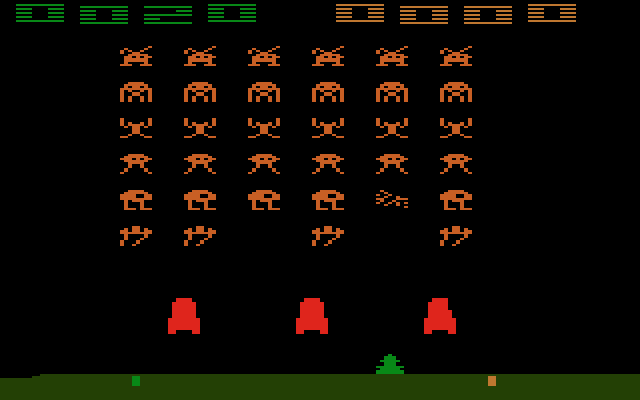
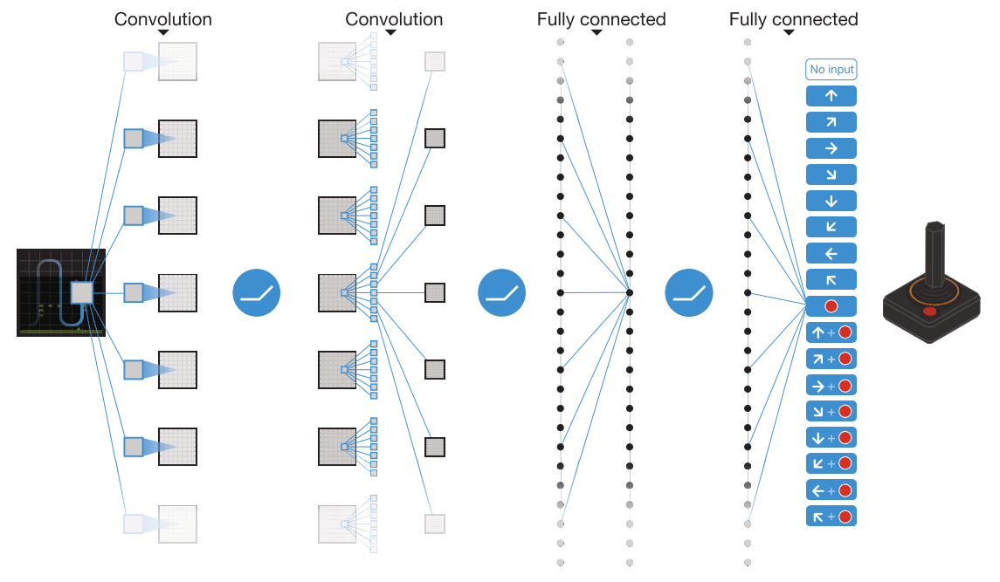
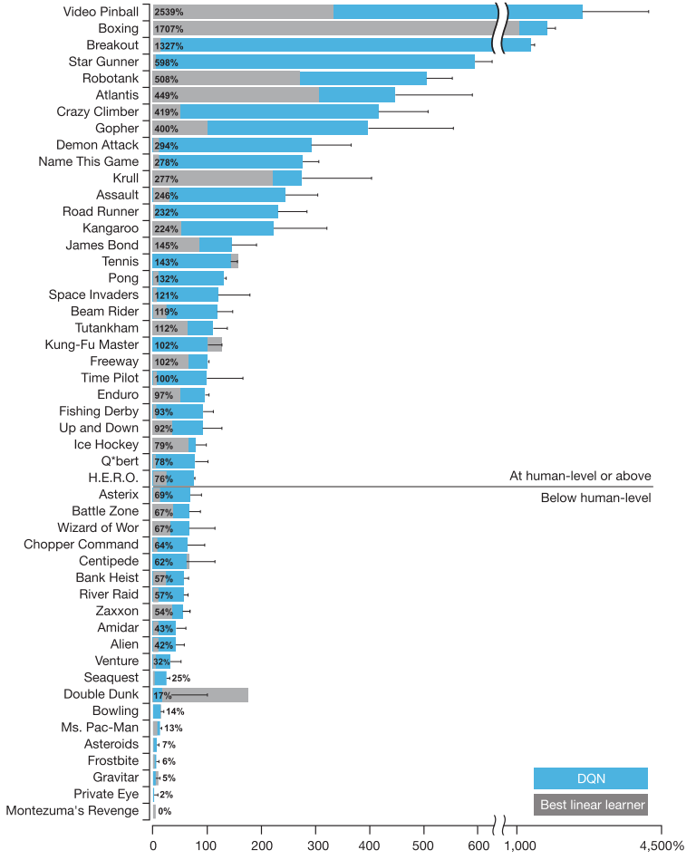
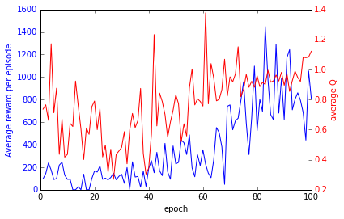
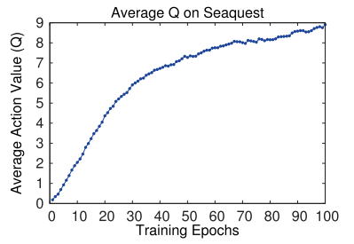
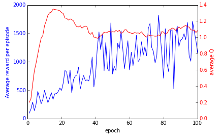
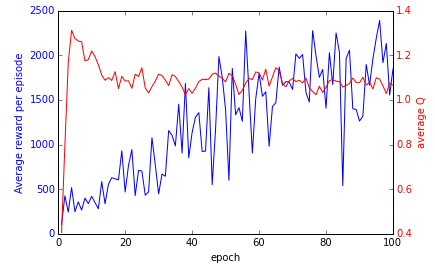
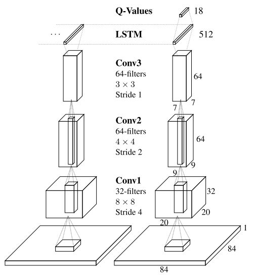

A Glance at Reinforcement Learning using DQN
presentation by Ruben Vereecken
Current State of Affairs
Reinforcement Learning
Q-Learning for learning offline policy
Large state space -> function approximator for Q
Enter Deep Q-Networks
Atari Testbed

Deep Q-Network (DQN) by DeepMind

DQN Tips & Tricks
Convolutional layers to learn features from pixels
Use 4 consecutive frames to make everything Markovian
Batch training after every step
Use of target network (to stabilize)
Huge replay memory: 1M samples (> 7GB)
Make the network deep and big enough
DQN Results

My attempts so far
Getting DQN running
Forked some guy's implementation
Get it to run using CPUs
Get it to run fast (using GPUs)
Get it to finish (~100 days for full network)
A first comparison
 
Parameter exploration: Introduce Targets
 
Varying freeze network frequencies
10000 vs 2000
Ideas for Improvements
Introduce Memory: Recurrent Connections

Currently explored ideas
Speed up DQN learning by assisting with a linear learner
Make learners agree on samples
Use the faster learner's target values
Shrink replay memory by picking representative samples
Make learning faster by learning what matters
Accurately learn what representative means